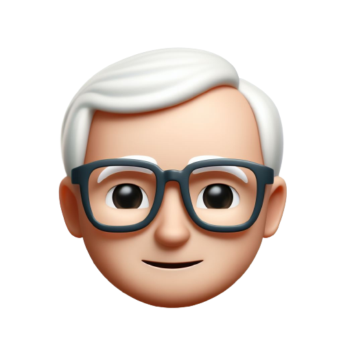

Combinando habilidades criativas e técnicas, sou um programador versátil atuando tanto no cenário front-end
quanto no desenvolvimento mobile. Com uma paixão pelo design e pela usabilidade, trago à vida interfaces
cativantes e funcionais. Minha jornada como programador front-end permite que eu crie experiências de
usuário intuitivas por meio de HTML, CSS e TypeScript, garantindo a estética e a funcionalidade perfeitas.
Além disso, minha habilidade como programador mobile me permite construir aplicativos dinâmicos e responsivos,
levando as ideias além das telas. Minha busca incessante por aprendizado e aprimoramento reflete-se na minha
capacidade de transformar conceitos em código que não apenas funcione, mas também inspire. Sou apaixonado
por transformar desafios em oportunidades e pela constante evolução no mundo do desenvolvimento.
O que estou fazendo
Desenvolvimento web
Desenvolvimento de sites de alta qualidade a nível profissional.
Aplicativos mobile
Desenvolvimento profissional de aplicativos para iOS e Android.
Feedbacks
Vitor Mateus Zamboni
Sua agilidade no desenvolvimento de aplicativos móveis e sua proficiência nas mais recentes tecnologias
de programação mobile do mercado o destacam como um desenvolvedor talentoso. Suas habilidades impressionantes
no desenvolvimento mobile e seu conhecimento sólido das mais recentes tecnologias mobile garantem a entrega
de um trabalho completo e de alta qualidade.
Vinicius Eduardo Sgarbossa
Gostaria de elogiá-lo por suas notáveis habilidades em desenvolvimento de aplicativos móveis e programação front-end.
Fiquei verdadeiramente impressionado com o seu trabalho e gostaria de lhe parabenizar por seu comprometimento em
aprimorar continuamente suas habilidades. Parabéns por suas conquistas até agora, e estou ansioso para ver suas
futuras realizações nesses campos. Continue com o excelente trabalho!
Laizzi Zierhut
Gostaria de destacar sua notável dedicação ao trabalho e sua consistente entrega de alta qualidade.
Sua habilidade de comunicação é eficaz e auxilia na clareza de seus projetos. No entanto, para
otimizar a eficiência, recomendo um aprimoramento no gerenciamento de prazos e priorização de
tarefas. Continuamos a valorizar sua contribuição e esperamos ver seu contínuo crescimento
e desenvolvimento profissional.

Marcelo Guilherme Kühl
Vitor de Quadr é meu estudante desde 2020, do Curso Técnico em Informática Integrado.
em 2022,quando apresentei a todos os estudantes da turma 2ia, a proposta da criação
de uma página WEb como trabalho final da disiciplina Internete e Programação WEB;
fui surpreendido, pois sua página foi além das expectativas. Vitor é um estudante
resiliente, focado naquilo que faz, buscando aprimorar suas habilidades de programador,
buscando outras fontes de informação. O que o torna um exemplo para muitos, um diferencial.
Parabéns Vitor, continue com essa garra e vontade de galgar caminhos que aos olhos de muitos
parece impossível. Creia em você mesmo, pois tem potencial para ir muito além.
Júlio César Brugalli Júnior
Muito excepcional no desenvolvimento . Sua habilidade sobre conceitos complexos e com jma interface
de usuário simples e intuitiva . Além disso, sua capacidade de resolver problemas rapidamente e
implementar soluções eficientes tem sido crucial para o contínuo do projeto. Seu comprometimento
e profissionalismo são realmente admiráveis.
Resumo
Educação
Escola Municipal José Fraron
2011 — 2016
Adquiri fundamentos educacionais sólidos que serviram como base para minha jornada acadêmica,
promovendo habilidades essenciais e desenvolvimento pessoal.
Continuei a desenvolver meu conhecimento com um currículo abrangente e oportunidades de aprendizado enriquecedoras,
preparando-me para os desafios educacionais futuros de maneira diversificada e abrangente.
Mergulhei em um ambiente de aprendizado avançado, explorando disciplinas específicas e desenvolvendo habilidades cruciais
para a próxima fase da minha educação e crescimento pessoal.
Como estagiário em programação, estou imerso em um ambiente dinâmico, aplicando conhecimentos
teóricos em projetos do mundo real. Essa jornada está me proporcionando valiosas oportunidades
de aprendizado contínuo, colaboração com profissionais experientes e aprimoramento das minhas
habilidades técnicas enquanto contribuo ativamente para a equipe.